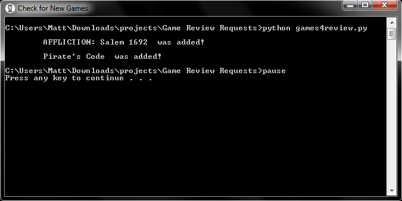
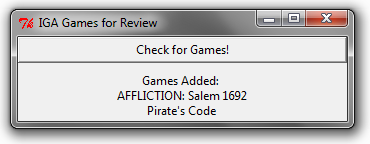

A Python web scraping tool that checks for updates from the Indie Game Alliance website for board games seeking reviews.
Python, batch, Tkinter
In my spare time, I review board games. The Indie Game Alliance maintains a page of designers looking to get their game reviewed. There is no way to tell how long the games have been on the list and if they still need reviews. Normally, I could add the site's RSS feed to my RSS reader and monitor for new games that way. Unfortunately the site is not RSS friendly, so I created my own solution.
The script grabs all the games listed on the seeking reviewer page and compares with a list of games from the last time it checked. If any games are added, notifies me of the game title and automatically opens the website.
Originally the Python script was run from a batch file, but more recently I used this project to learn Tkinter and created a simple GUI.
